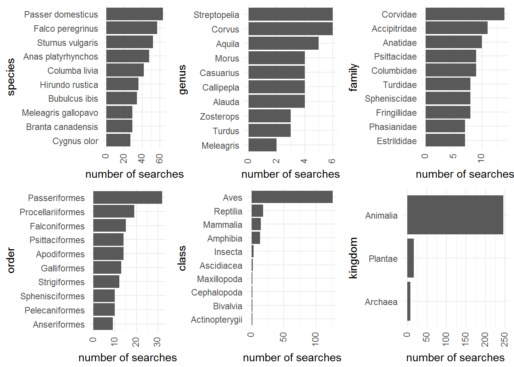
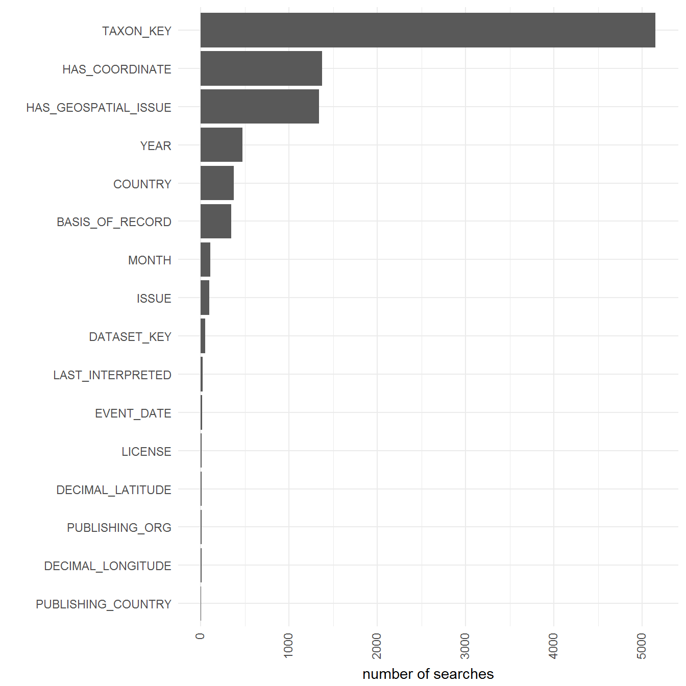
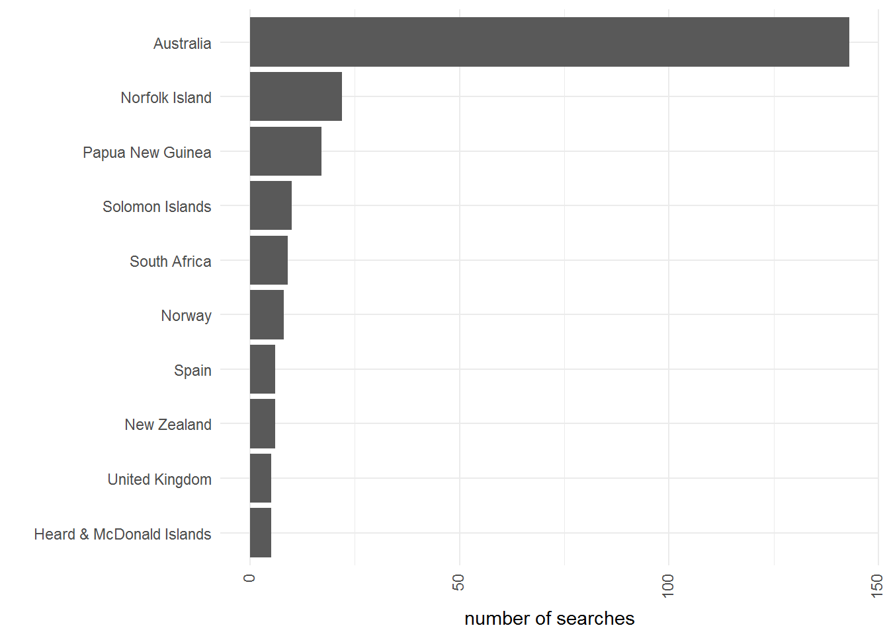

Dataset Usage
John Waller
May 4, 2018
BirdLife Australia, Birdata
How many downloads through time?
Here I plot the total downloads and then group by month to make the plot smoother.
Top 10 Taxon Searches
What taxon_key was used during the occurrence download?
Here I grouped by rank. This graph was in fact very expensive to compute because I had to look up the rank for each taxon key before it could be grouped. Might be best used only in annual reporting even though it is informative.

Images
Images for the top 10 searched taxon keys for species and genus.
Top 10 Images for species


Top 10 Images for genus


Top search filter used when dataset was hit
This graph is almost always very similar between datasets. See: http://rpubs.com/JohnWaller/387693

Top searched country for dataset
This is the country that was searched not the country that the search was coming from.
